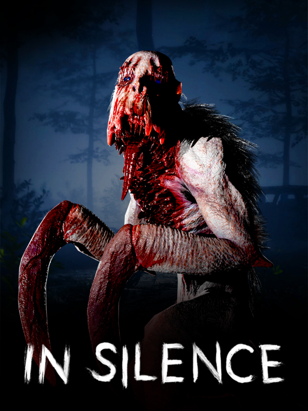

In Silence
In Silence
Details
|  | |
| Playtime | 4h 36m 0s |
| Last Activity | 2020-10-31 0:41:56 |
| Added | 2023-08-11 0:29:08 |
| Modified | 2023-08-11 0:37:44 |
| Completion Status | Abandoned |
| Library | Steam |
| Source | Steam |
| Platform | PC (Windows) |
| Release Date | 2020-10-16 |
| Community Score | |
| Critic Score | |
| User Score | |
| Genre | Adventure |
| Developer | Ravenhood Games |
| Publisher | Ravenhood Games |
| Feature | Co-Operative Multiplayer |
| Links | Steam Official Discord YouTube Twitch |
| Tag | |
Description

A New Experience
In Silence is being developed in order to provide a different online horror experience. You can hunt survivors as Rake by using your hypersensitive senses or play as a survivor yourself, use proximity voice chat and work together with other survivors to either escape Rake, or fight back.A Blind Monster... Rake!
Rake’s vision depends on sound. The less sound there is, the less Rake’s able to see. Rake can hear the slightest bit of noise over huge distances and run at an incredible speed. With traits like these, It’s not hard to guess what Rake could do in the right hands.
Shh... Be Quiet!
You may be a heartbeat away from being face to face with a monster because of a step you took, a toy you stepped on, or a vase you broke… But was it your plan all along? You could use noise that objects like a TV or a Radio make in order to distract Rake and escape the area, or maybe to set up a trap instead....
Escape or Hunt!
As a Survivor, you have two choices. Either try to escape by repairing a car and leaving with it, or open a secret armory and hunt the monster down.Where Am I?
Every match you’ll play is going to be different. Your perks, escape points, roles and the item placement will all be randomized. You will always feel uneasy because there’s no way to predict how the game will go.
Key Features
- Single player
Take your shot at defeating Rake by yourself! - Nightmare Mode
The amount of items that are spread across the map is equal to the amount of items you will require. If there are 3 wheels missing from a car, there will be only 3 wheels in the map. - Perks
With 16 different perks, every one of them will be useful in different situations and games. The perks will help with giving different roles to every survivor such as becoming a formidable hunter or a great mechanic. - Proximity Voice Chat
You can hear the voices of other players according to their proximity to you. But don’t forget, Rake will be able to hear your voices too. - Flashlight and Flashbang
You will use an advanced flashlight to defuse Rake. With flashbang effect, this flashlight can stop Rake, but also it can make your friends blind. If you are caught by Rake or your friend is caught, you can stun Rake with flashbang and escape. In order to use flashbang, you have to be sure that your flashlight has enough energy. - The Armory
During the match, survivors will be able to find and open a secret armory in order to acquire weapons to aid them with fighting Rake. As a result of opening the armory, Rake might get a bit agitated… - Enraged Monster
When the armory or the escape gates are opened, Rake gets enraged. During this phase, Rake will be able to kill survivors while running. - Play as a Mouse
If you die as a survivor, you’ll reappear as a mouse but you’ll still be able to help your friends escape by doing things such as; finding items for other players to use or distracting the monster.